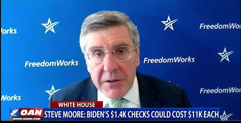

Steve Moore: Biden’s $1.4K checks could cost $11K each
OAN Newsroom
After passing its nearly $2 trillion COVID relief bill, the Biden White House has set its sights on taxes.But top economists warn the tax plan is as crippling to everyday Americans as the COVID bill.One America’s Chief White House Correspondent Chanel Rion has more from Washington.
Posted On: 2021-03-23T00:00:00

Content Date: 2021-03-23
Download Date: 2021-04-16
Document ID: L0C049Y0G